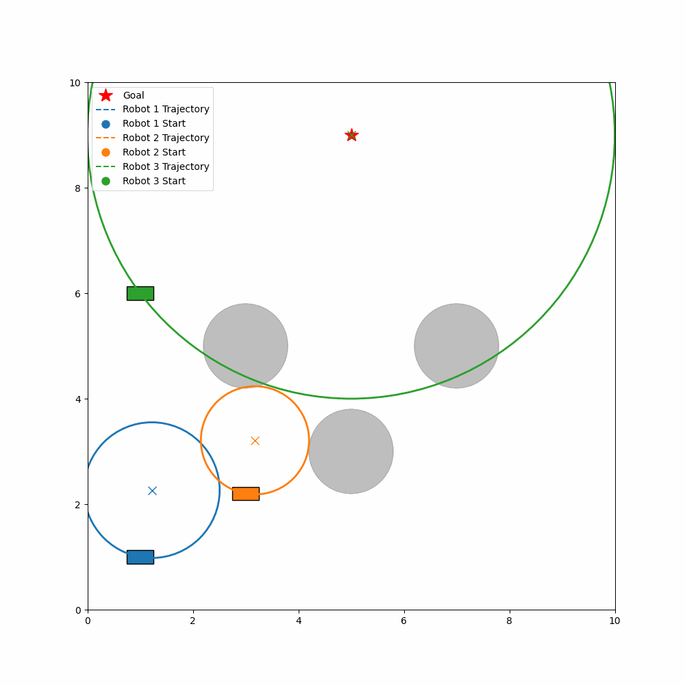

An Integrated Planning Approach to Cooperative Driving Automation
This project extends the Integrated Planning and Control (IPC) framework to support cooperative driving using Vehicle-to-Vehicle (V2V) communication. The original IPC approach allows reactive, trajectory-free navigation by computing control inputs directly from range data. However, when applied independently in multi-agent settings, it often leads to inefficient trajectories or deadlock due to uncoordinated reference selection.
To address this, we formulate a joint optimization problem where agents share their admissible motion regions and selected reference points via V2V. This allows them to collaboratively select references that satisfy both individual feasibility and inter-agent separation constraints. The joint formulation preserves the feedback-driven nature of IPC while ensuring that agents safely and efficiently coordinate in shared environments.
We evaluated the approach using two simulated scenarios: (1) shared-goal navigation, where multiple robots attempt to reach the same goal in a cluttered environment, and (2) distributed parking, where each robot has a unique goal in a constrained parking lot. In both settings, the cooperative IPC approach consistently outperformed the independent baseline in terms of success rate, safety, path efficiency, and time to goal.

Figure 1: Independent multi-agent IPC leading to deadlock in a shared-goal scenario.Figure 2: Coordinated multi-agent IPC with V2V resolving spatial conflict at the planning stage.Figure 3: Uncoordinated IPC in a parking lot scenario causes overlapping and inefficient paths.Figure 4: Cooperative reference selection using V2V leads to smooth, conflict-free navigation.
For instance, in the shared-goal scenario, the average success rate improved from 53% with independent IPC to 80% using V2V coordination. In the distributed parking task, success rose from 47% to 93%. Minimum inter-agent distance also increased, highlighting improved safety through coordination.
Overall, this work demonstrates that coordination at the reference planning stage is essential even in static environments. V2V-enabled IPC provides a scalable, distributed solution for safe and efficient multi-robot navigation—laying the foundation for more robust behavior in real-world cooperative driving systems.